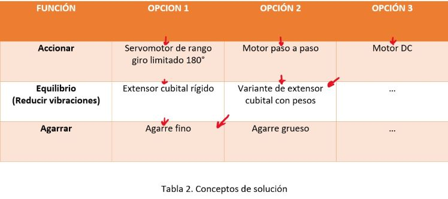
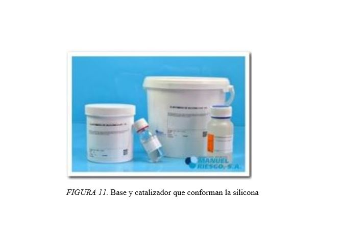

CUADRO DE OPCIONES
COMPONENTES
LÍNEA TRENZADA DE PESCA

Para realizar nuestro mecanismo de pinza era necesario encontrar un material el cual nos permitiera ejercer una tensión sobre los dedos con la ayuda del servomotor. Teniendo como línea base el que una persona tenga un agarre promedio de 40 N (alrededor de 4 kg) buscamos un material que como mínimo puede llegar a sostener ese peso. (Lizeth Muñoz Jashimoto, Enrique De la Vega Bustillos, Francisco Octavio Lopez Millan, Bertha Alicia Ortiz Navar & Karla Lucero Duarte, 2009).
Al principio planteamos como solución un hilo de nylon el cual teniendo un diámetro pequeño podía soportar esa cantidad; sin embargo, lo descartamos debido a que con el tiempo transcurrido podemos correr el riesgo de que el hilo se estire afectando al sistema que va a estar parametrizado.
Finalmente, decidimos utilizar una línea trenzada pesca de 200 lb (alrededor de 90 kg) la cual está diseñada para estirarse poco o nada, sin contar que puede soportar fácilmente el peso mínimo establecido la sin ningún inconveniente. Su alta tenacidad la hace, 15 veces más fuerte que el acero y le otorga una mayor duración que las fibras de poliéster. (Zaragoza Marine, 2017).
Además, presenta una línea trenzada la cual le atribuye más resistencia que una línea monofilamento del mismo diámetro, por lo cual podremos optar por un diámetro menor.(Hilos y Líneas de pesca, s.f.).
ELASTANO DE SILICONA
Este elastómero de silicona retocula de dos componentes, una base y un catalizador.De esta mezcla se obtiene un material flexible y de excelentes propiedades mecánicas. (Manuel Riesgo S.A.,2018)
En este caso lo usaríamos para recubrir la parte externa del prototipo, protegiendo al mecanismo interno y otorgando una superficie uniforme.
DISEÑO MODULAR

DISEÑO MECÁNICO

REFERENCIAS
MANUEL Riesgo S.A. (2015) ELASTOMERO DE SILICONA S-421 1 K. Disponible en línea. Recuperado de: http://manuelriesgo.com/moldes-y-reproducciones/1041-elastomero-de-silicona-s-421-1-k.html
Piensa 3D (2017).Aprendiendo Arduino. Recuperado de: https://aprendiendoarduino.wordpress.com/2017/06/24/motores-arduino/
Tamps, O. (2017). 【 HILOS Y LÍNEAS DE PESCA 】Finos y Resistentes - EsPesca. Recuperado de https://espesca.com/hilos-y-lineas-de-pesca/
200Lbs 1500Yds Línea Trenzada Para Pesca - Color Rojo - Power Pro. (2017). Recuperado de https://zaragozamarine.com.mx/pesca/lineas-y-lideres/lineas-para-pesca/multifilamento/power-pro/rollos-grandes/200lbs-1500yds-rojo-power-pro/